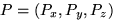
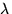
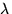
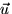
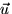
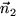

Amb freqüència necessitarem calcular la relació entre diferents
elements geomètrics a l'espai. Els casos més útils es resumeixen a la
taula següent:
Punt |
Recta |
Pla |
|
Punt |
distància | distància | distància |
Recta |
distància | intersecció | |
Pla |
intersecció |
on cada cel·la rellevant conté un link a la discussió corresponent més avall. Observeu que algunes caselles diuen "distància" i d'altres "intersecció". Amb això hem volgut indicar l'operaciò més natural entre cada parella d'entitats. És a dir, per exemple, que dues rectes a l'espai normalment no s'intersequen (tot i que poden fer-ho). En aquest cas doncs l'operació més natural és el càlcul de distàncies: el cas especial en que les dues rectes es tallen vindrà assenyalat per una distància zero entre elles. Per aquesta raó, a l'espai tridimensional, hom parla de "rectes en posició general" per referir-se a rectes que no es tallen, igual que a "punts en posició general" quan no hi ha més de dos colineals ni més de tres en un pla. Altrament (quan la posició no és general), diem que estem en un cas singular.
Siguin dos punts  i . La distància entre els dos punts es calcula a partir de les seves coordenades de la següent forma:
Aquesta fórmula s'obté per una simple aplicació del teorema de Pitàgoras.
Siguin donats un punt i una recta  (a on és un punt de pas i és un vector director
unitari, (veure definició). Per a
trobar la distància entre el punt i la recta (és a dir la distància
entre el punt i aquell punt de la recta que està més a prop d'ell),
(a on és un punt de pas i és un vector director
unitari, (veure definició). Per a
trobar la distància entre el punt i la recta (és a dir la distància
entre el punt i aquell punt de la recta que està més a prop d'ell),
calculem primer aquest punt més
proper  .
Un punt qualsevol sobre la recta pot
escriure's com . Si
.
Un punt qualsevol sobre la recta pot
escriure's com . Si  és el punt més proper a , aleshores el vector ha de ser perpendicular a la recta, i per tant al
seu vector director
és el punt més proper a , aleshores el vector ha de ser perpendicular a la recta, i per tant al
seu vector director  . Aquesta
condició queda expressada en forma d'equació imposant que el producte
escalar d'aquests vectors sigui zero: i per tant
. Aquesta
condició queda expressada en forma d'equació imposant que el producte
escalar d'aquests vectors sigui zero: i per tant
Substituint
a l'expressió de  aquest valor de
, obtindrem les seves coordenades, que
podrem fer servir per a calcular la distància
a .
aquest valor de
, obtindrem les seves coordenades, que
podrem fer servir per a calcular la distància
a .
Sigui
un punt a l'espai, i sigui un pla
donat per un punt i un vector normal unitari  .
.
Per calcular la
distància del punt al pla hi ha prou amb observar que per
qualsevol vector  , el producte
escalar
dóna la llargada de la projecció de
, el producte
escalar
dóna la llargada de la projecció de  en la direcció de
en la direcció de  . Per tant
hi ha prou amb construir un vector que vagi des de a qualsevol punt del pla (per exemple
. Per tant
hi ha prou amb construir un vector que vagi des de a qualsevol punt del pla (per exemple  ), i calcular la llargada de la projecció:
), i calcular la llargada de la projecció:
Si el pla ens ve
determinat per una equació (), aleshores hom pot calcular la
distància usant que és
un vector normal al pla (no unitari), i que per tot punt
 del pla és
. Aleshores, la
normal unitària és i per
tant tenim . Obtenim doncs que
del pla és
. Aleshores, la
normal unitària és i per
tant tenim . Obtenim doncs que
Exercici: Podeu arribar a
aquesta mateixa fórmula calculant el punt del pla que és al peu de la
perpendicular al pla que passa per (el punt  a la
figura),
a la
figura),
i calculant la distància entre i el punt
trobat. [indicació: Feu servir que  és perpendicular al pla,
la forma paramètrica de la recta, i la intersecció de pla i recta]
és perpendicular al pla,
la forma paramètrica de la recta, i la intersecció de pla i recta]
Dues rectes a l'espai, en posició general, es creuaran com mostra la figura.
A vegades ens caldrà
calcular la distància entre elles, és a dir la distància entre aquells
dos punts (un a cada recta) que estiguin més propers. Un altre cop
podrem calcular-la fàcilment usant el truc de la projecció. Per això
necessitarem calcular un vector perpendicular simultàniament a les
dues rectes, cosa que ens proporciona el producte vectorial: . Hi ha prou
doncs amb prendre un vector qualsevol que vagi d'un punt a la recta
a un a la recta (com el vector  de la figura), i projectar-lo sobre la direcció
de  mitjançant el producte
escalar . Observeu que si les dues
rectes són paral·leles (que no és una posició general), no
podem usar directament la fórmula anterior, car serà nul. Tanmateix en aquest cas podem prendre un
punt qualsevol d'una de les rectes i calcular la seva distància a l'altra recta. Aquesta distància
serà zero si les dues rectes són coincidents, i altrament donarà la
distància que hi ha entre les dues rectes (que s'ateny per a infinites
parelles de punts). Si les rectes es tallen però no són
paral·leles, la fórmula general donarà (correctament) una
distància igual a zero.
de la figura), i projectar-lo sobre la direcció
de  mitjançant el producte
escalar . Observeu que si les dues
rectes són paral·leles (que no és una posició general), no
podem usar directament la fórmula anterior, car serà nul. Tanmateix en aquest cas podem prendre un
punt qualsevol d'una de les rectes i calcular la seva distància a l'altra recta. Aquesta distància
serà zero si les dues rectes són coincidents, i altrament donarà la
distància que hi ha entre les dues rectes (que s'ateny per a infinites
parelles de punts). Si les rectes es tallen però no són
paral·leles, la fórmula general donarà (correctament) una
distància igual a zero.
Un càlcul molt freqüent en els gràfics per computador és el de la intersecció entre una recta i un pla (que ja hem fet servir en l'exercici sobre càlcul de la distància d'un punt a un pla).
El cas més senzill és quan la recta està donada en la seva forma paramètrica, com a la figura. Aleshores tots els punts de la recta són de la forma per algun valor del paràmetre . Els punts del pla satisfan, per altra banda, que , ja que P-B és un vector al pla i per tant ha de ser perpendicular a la normal al pla. Ajuntant les dues equacions tenim que pel punt P, que està a la recta i al pla, ha de valdre que , i per tant obtenim
En el cas
particular en que  i
i  són perpendiculars, aquesta
fórmula no ens serveix, car el denominador s'anul·la. Observeu
tanmateix que en aquest cas la recta és paral·lela al pla, pel
que tots els seus punts són a una distància constant del pla. Podem
triar un punt qualsevol (per exemple A) i calcular la seva distància al pla.
són perpendiculars, aquesta
fórmula no ens serveix, car el denominador s'anul·la. Observeu
tanmateix que en aquest cas la recta és paral·lela al pla, pel
que tots els seus punts són a una distància constant del pla. Podem
triar un punt qualsevol (per exemple A) i calcular la seva distància al pla.
Aquesta intersecció dóna una recta, excepte en el
cas en que els plans siguin paral·lels (cas singular en el qual
la intersecció és buida o coincideix en tots dos plans). De fet és la
transformació de recta en equació implícita a recta paramètrica que
abans haviem postergat. És evident que el vector director de la recta
intersecció ha de ser perpendicular a i també a  (perquè
està continguda a tots dos plans). Per tant podem prendre . Perquè l'equació paramètrica de la recta estigui completa,
ens cal trobar les coordenades d'un punt qualsevol. Això es fa
intersecant amb un tercer pla, i calculant les coordenades del punt
intersecció (és a dir resolent un sistema lineal de tres equacions i
tres incògnites). Per tal de fer el càlcul més senzill, i donat que
tenim llibertat per a triar aquest tercer pla, hom tria un dels plans
coordenats. Es recomana seleccionar el pla dels punts que tenen igual
a zero aquella coordenada que correspongui a la més gran de les
components de  . Aquest és el pla coordenat que la recta
talla "més perpendicularment", i per tant el que donarà més gran
estabilitat numèrica. En triar un pla coordenat el sistema es redueix
automàticament a un sistema de dues equacions amb dues incògnites (ja
que sabem el valor que ha de prendre una de les coordenades: zero).
. Aquest és el pla coordenat que la recta
talla "més perpendicularment", i per tant el que donarà més gran
estabilitat numèrica. En triar un pla coordenat el sistema es redueix
automàticament a un sistema de dues equacions amb dues incògnites (ja
que sabem el valor que ha de prendre una de les coordenades: zero).